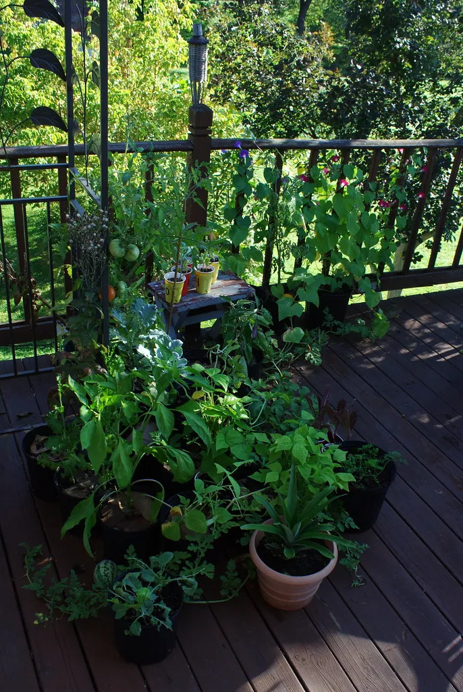

The gentlest way to grow: herbs, vegetables, and flowers in pots, raised to a comfortable height with no digging and no stooping. Here is how to choose pots and soil, what to grow, and how to keep it all thriving.

Why containers are such a joy
Container gardening is the gentlest, most forgiving way to grow, and it is perfect for anyone who would rather not dig, kneel, or bend to the ground. Pots can sit on a patio, a step, a balcony, or a sturdy table at a comfortable height, bringing herbs, vegetables, and flowers right to where you can tend them with ease.
There is no bad soil to fight, far fewer weeds, and you can move a pot to chase the sun or shelter from a storm. For many people, a cluster of good containers is all the garden they need — and all the garden they want.
Choosing pots and soil
What you'll need
- Pots with drainage holes in the bottom (this is essential)
- A bag of quality potting mix — not garden soil, which packs down too hard
- A saucer for each pot, indoors or on a patio
- A watering can
- Choose the largest pots you can comfortably manage; bigger pots hold more moisture and need watering less often.
- Make sure every pot has drainage holes, so roots never sit in water.
- Fill with a light, bagged potting mix rather than heavy garden soil.
- Place pots where they will get the right light for what you are growing, and at a height that is comfortable to reach.
Tip: Raised on a bench, a table, or a sturdy plant stand, a container garden can be tended entirely standing up or sitting down — a real kindness to anyone for whom bending to the ground has grown difficult.
What to grow in pots
A surprising amount thrives in a container. For a first pot, you can hardly do better than herbs and salad.
- Herbs — basil, parsley, chives, mint, and thyme all flourish in pots and give you fresh flavor steps from the kitchen.
- Tomatoes — bush or “patio” varieties do wonderfully in a large pot with a stake or cage for support.
- Salad leaves — quick, easy, and you can snip them again and again.
- Flowers — marigolds, petunias, and geraniums bring color and cheer, and some bring in the bees.
A closer look at growing herbs
If you grow only one thing in pots, make it herbs. They are among the easiest, most rewarding, and most useful plants there are, giving you fresh flavor for the kitchen just steps from the door, and most are perfectly happy in a container.
Basil loves warmth and sun and will give you leaves all summer if you pinch out the tips to keep it bushy. Parsley and chives are tough, forgiving, and come back year after year in the case of chives. Mint grows so vigorously that a pot is the ideal place for it, keeping it from taking over a bed. Thyme, oregano, and rosemary are Mediterranean herbs that like sun and sharp drainage, and they ask very little water once settled.
Snip herbs often — regular picking keeps them productive and bushy rather than leggy. Most prefer a sunny spot and a pot that drains well, and a light feed now and then keeps them lush. A windowsill pot of herbs will even carry some flavor into the winter months indoors. For the cost of a few seed packets or small plants, a herb garden in pots repays you every time you cook, and there is real pleasure in stepping outside to gather a handful for the evening meal.
Caring for your containers
Pots ask for a little more attention than open ground, mainly because they dry out faster — but the care is simple and pleasant.
- Check the soil daily in warm weather; water when the top inch feels dry, until it runs from the drainage holes.
- Feed container plants every couple of weeks in the growing season with a general liquid feed, following the label.
- Snip off spent flowers and pick vegetables often to keep plants producing.
- In a heatwave, move pots into a little afternoon shade and water morning and evening if needed.
- Turn each pot a quarter now and then so every side gets its share of the sun and the plant grows evenly.
Tip: Grouping pots together helps them shade one another's soil and hold moisture, and it makes watering quicker. It looks lovely, too — a gathered cluster of pots has all the charm of a cottage border in miniature.
The art of watering pots
If there is one skill that makes a container gardener, it is watering, because pots dry out far faster than open ground and cannot draw on the moisture of the earth below. In warm weather a pot may need water every single day, sometimes twice, while in cool or wet spells it may need none for a week. The trick is to check rather than to guess.
- Push a finger an inch into the soil; if it is dry at your fingertip, it is time to water.
- Water slowly and thoroughly until it runs freely from the drainage holes, so the whole root ball is soaked.
- Empty the saucer afterward so the pot never sits in standing water, which rots roots.
- Water in the morning where you can, so the plant is refreshed for the day ahead.
Tip: Self-watering pots, which hold a reservoir of water in the base, are a wonderful help for anyone who travels, forgets, or simply finds daily watering a chore. They let a plant drink as it needs, and greatly forgive a missed day.
Feeding container plants
Because frequent watering washes nutrients out of the limited soil in a pot, container plants need feeding more than those in the ground. The good news is that it is simple. A general-purpose liquid plant food, mixed into the watering can every couple of weeks through the growing season, keeps most container plants lush and productive. Always follow the dilution on the label — more is not better and can burn the roots.
A yellowing, tired-looking plant in midsummer is very often simply hungry rather than sick, and a feed works wonders. Alternatively, you can mix a slow-release granular feed into the potting soil at planting time, which releases its nutrients gradually over months and saves you remembering. Either way, ease off the feeding as fall arrives and growth slows; plants need little through the dormant months. Fresh potting mix each spring tops up the goodness that last year's plants drew out.
Common troubles, simply solved
Container plants are forgiving, and most troubles trace back to water. Wilting, yellowing leaves and soggy soil mean too much water or poor drainage — check the holes are clear and let the pot dry out. Wilting with bone-dry soil means too little; soak the pot thoroughly, even standing it in a basin of water for an hour to revive it. Pale, leggy, unproductive plants usually want more light or more feeding. And a plant that dries out within hours of watering has likely outgrown its pot and wants moving to a larger one.
Pests are fewer on a patio than in a bed, but keep an eye out for aphids, which a sharp spray of water or a wipe will shift, and for slugs, which are easily picked off in the evening. A healthy, well-watered, well-fed plant shrugs off most troubles on its own, so good basic care is the best pest control there is.
Containers through the year
A container garden can give pleasure in every season. Plant cool-season greens and pansies in spring and fall, fill summer with tomatoes, herbs, and bright flowers, and in winter a pot of evergreens or a few hardy plants keeps the patio from looking bare. Because the pots are easy to change out, you can refresh the display whenever the mood or the season takes you.
At the end of a growing season, empty spent plants onto the compost, give the pots a rinse, and store the frost-tender ones somewhere sheltered. Top up each pot with fresh potting mix before replanting, as the old mix loses its structure and goodness over time. Tended this gentle way, a few good containers will bring you the pleasures of a garden for many comfortable years — no digging, no stooping, just the simple joy of growing.
And do not overlook how sociable a container garden can be. Pots cluster handsomely by a door to welcome visitors, a planter of herbs makes a lovely gift, and a child will happily take charge of watering a pot of their very own, and there are few better ways to pass a love of growing things down a generation. For anyone in a flat, a rented home, or a place with no garden at all, containers bring the whole pleasure of growing within reach — proof that you need no plot of land, only a sunny step and a little care. For the groundwork around the pots, the Lawn & Yard guide keeps the rest of the outside tidy.